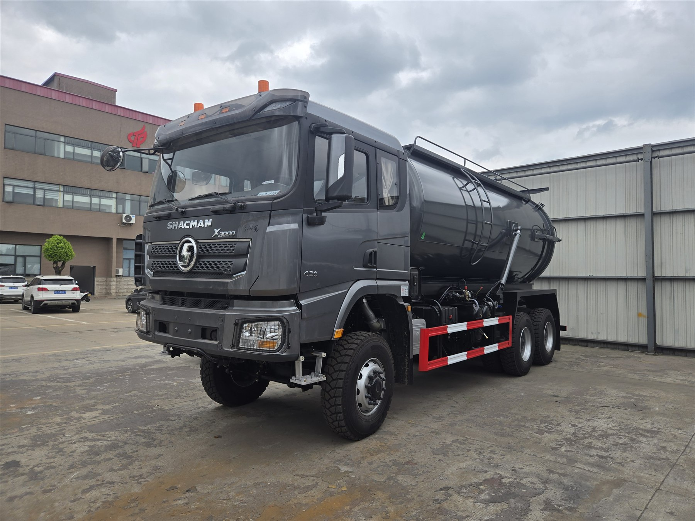
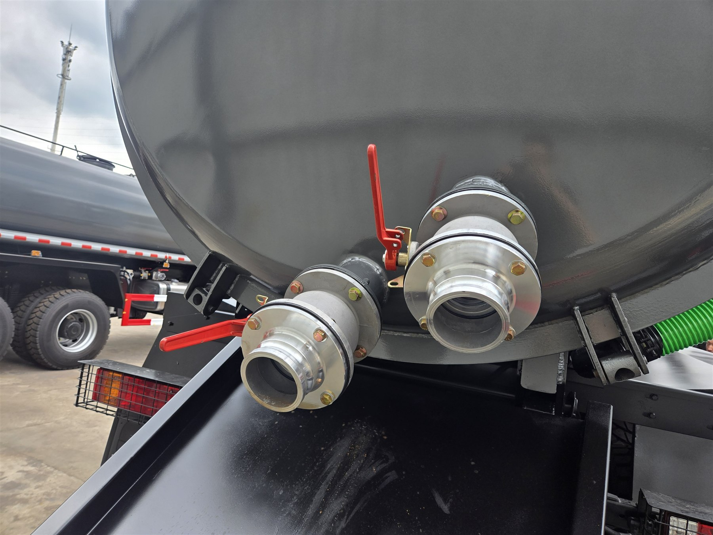

Configuration at a glance / 配置概览： The supplied specification identifies model SX5255GXW5V435 as a left-hand-drive SHACMAN X3000 6x6 sewage suction truck with a 20 m3 vacuum tank and a 430 HP Weichai engine. The photos show the completed dark-gray vehicle, cylindrical tank, suction hose and rear outlet arrangement. / 资料确认车型为 SX5255GXW5V435，采用陕汽 X3000 左舵 6x6 底盘、20 立方米真空吸污罐和 430 马力潍柴发动机；实车照片展示了整车、圆柱形罐体、吸污管及后部接口。
English · 中文 · Verified specification / 已确认配置
What this X3000 6x6 sewage suction truck is designed to do
This vehicle combines an all-wheel-drive X3000 chassis with a high-volume vacuum sewage tank. It can be considered for municipal drainage maintenance, septic-tank emptying, construction-site wastewater collection, industrial sludge transfer and service work where access roads may be unpaved or uneven. The 6x6 layout is relevant when the truck must travel beyond normal paved streets, but buyers should still describe gradients, soil condition, turning space and the distance between the collection point and discharge point.
A sewage suction truck is not selected by tank volume alone. The liquid-to-solids ratio, material viscosity, suction depth, horizontal hose distance, discharge method and daily work cycle directly affect the practical configuration. These details should be confirmed before the pump, hose and operating accessories are approved.
Verified reference specification
| Item | Confirmed configuration | 项目 | 已确认配置 |
|---|---|---|---|
| Model | SX5255GXW5V435 | 车型 | SX5255GXW5V435 |
| Drive / steering | 6x6, left-hand drive | 驱动 / 驾驶位置 | 6x6，左舵 |
| Wheelbase | 4375 + 1400 mm | 轴距 | 4375 + 1400 mm |
| Engine | Weichai WP12.430E201, 430 HP, 11.596 L, Euro II | 发动机 | 潍柴 WP12.430E201，430 马力，11.596 L，欧 II |
| Transmission | FAST 12JSD200T-B with QH50 flange PTO | 变速箱 | 法士特 12JSD200T-B，带 QH50 法兰取力器 |
| Axles | 9.5 t MAN front axle; 16 t HANDE dual-stage rear axles, ratio 5.262 | 车桥 | MAN 9.5 吨前轴；汉德 16 吨双级后桥，速比 5.262 |
| Frame / suspension | 850 x 300 (8+7) frame; multi-leaf springs front and rear | 车架 / 悬架 | 850 x 300（8+7）车架；前后多片簧 |
| Fuel tank / tires | 300 L aluminum-alloy tank; 13R22.5 tires, 10+1 | 油箱 / 轮胎 | 300 L 铝合金油箱；13R22.5 轮胎，10+1 |
| Vacuum tank | 20 m3; Q235 carbon steel, 6 mm tank body and 8 mm end caps | 吸污罐 | 20 m3；Q235 碳钢，罐体 6 mm、封头 8 mm |
| Suction system | Double vacuum oil pumps, overflow valve and level sight glass | 吸污系统 | 双真空油泵、防溢阀、视粪管 |
| Rear / hose equipment | Hydraulic rear-cover opening, 150 mm rear ball-valve outlet, 10 m suction hose and platform | 后部 / 管路配置 | 液压开启后盖、后部 150 mm 球阀出口、10 m 吸污管及平台 |
The table reproduces the supplied configuration. Final drawings, completed-vehicle mass, payload, destination compliance and any requested option must be reconfirmed in the sales contract. The source sheet contains inconsistent Chinese and English delivery-period figures, so no delivery promise is stated here.
Why the tank and suction system must be evaluated together
The 20 m3 tank provides the nominal collection volume stated in the configuration, while the 6 mm tank body and 8 mm end caps describe the specified steel construction. Operational suitability depends on more than those numbers. A buyer collecting thin wastewater has a different duty from a fleet handling dense sludge, sand or fibrous material. Before quotation, describe what will enter the tank and whether the truck will discharge by gravity, through the rear outlet or by another required method.
The double vacuum oil pumps, overflow valve and sight glass are important parts of the reference system. The overflow device helps protect the vacuum circuit from overfilling, while the sight glass supports level observation during operation. Pump performance figures are not stated in the supplied document, so required suction depth, horizontal distance and filling-time expectations must be discussed and confirmed rather than assumed.

Chassis matching for rough access and a full tank
A full vacuum tank places a demanding load on the completed vehicle. Chassis capacity, axle loading, center of gravity, tank mounting and local legal limits must be checked as one system. The reference chassis uses a 6x6 driveline, 9.5 t front axle, 16 t dual-stage rear axles and front/rear multi-leaf springs. This configuration is intended to support demanding work, but it does not remove the need to calculate the legal and practical load for the destination market.
The X3000 extended flat-roof cab specification includes a four-point hydraulic suspension, hydraulic main seat, automatic climate control, power windows, multifunction steering wheel, daytime running lights and a 180 Ah maintenance-free battery. For export orders, cab language, warning labels, tool kit and requested safety equipment should be confirmed on the final checklist.
What buyers should send before requesting a quotation
- The material to be collected: wastewater, septic waste, sludge or another medium.
- Estimated solids content, particle size and whether sand, fiber or corrosive material may be present.
- Maximum vertical suction depth and horizontal distance from the truck to the collection point.
- Preferred discharge method, hose and coupling requirements, and site access around the rear cover.
- Road surface, gradients, narrow access points and expected loaded travel distance.
- Destination country and port, required quantity, steering position and local completed-vehicle limits.
- Any required inspection, documentation, paint, markings or spare-parts package.

这台 X3000 6x6 20方吸污车适合哪些作业
该车采用陕汽 X3000 6x6 底盘和 20 立方米真空吸污罐，可根据实际工况用于市政管网维护、化粪池清掏、施工现场污水收集、工业污泥转运，以及需要通过非铺装道路或复杂进出道路的服务项目。6x6 驱动有助于应对更复杂的路面条件，但采购前仍应说明坡度、路面承载、转弯空间、吸污点与排放点之间的距离。
吸污车不能只按罐体容积选型。介质的固液比例、黏度、吸程、水平管路距离、排放方式和每天的作业循环都会影响最终配置。尤其是泵的能力与吸污深度，现有资料没有给出明确性能数据，因此必须在报价和生产前单独确认。
20方罐体与吸污系统配置说明
资料注明罐体采用 Q235 碳钢，罐体厚度 6 mm、封头厚度 8 mm，并配双真空油泵、防溢阀和视粪管。罐体可举升，后盖液压开启，尾部设置一个 150 mm 球阀出口，同时配置 10 m 吸污管和操作平台。实车照片中的后部接口、红色手柄阀门、绿色吸污管和圆柱形罐体与车辆用途相符。
这些数据是本次参考配置，不代表所有订单都必须完全相同。不同介质可能需要不同的泵、管路、阀门、罐体防护或清洗方案；目的国对整车尺寸、轴荷和允许总质量的要求也可能不同。最终生产配置应以双方确认的技术协议和图纸为准。
为什么要把底盘、罐体和作业条件一起确认
20 方罐体装满后，整车载荷和重心会明显变化，因此必须一起核对底盘承载、前后轴荷、罐体安装、副车架、轮胎和目的国法规。参考底盘配备 9.5 吨前轴、16 吨汉德双级后桥、前后多片簧和 13R22.5 轮胎。6x6 驱动适合对通过性有要求的项目，但并不等于车辆可以在任何软地或满载条件下行驶，实际工况仍需评估。
资料中的 X3000 加长平顶驾驶室配置包括四点液压悬置、液压主座椅、自动恒温空调、电动车窗、多功能方向盘、日间行车灯和 180Ah 免维护蓄电池。出口订单还应确认驾驶室标识语言、随车工具、安全配置及目的国要求。
询价前建议提供的信息
- 需要抽吸的介质：生活污水、化粪池污物、污泥或其他物料。
- 固体含量、颗粒大小，以及是否含砂石、纤维或腐蚀性介质。
- 最大垂直吸程、水平作业距离和期望的装满时间。
- 排放方式、软管与接头要求，以及后盖周围的操作空间。
- 道路类型、坡度、狭窄通道和车辆满载后的行驶距离。
- 目的国家、目的港、采购数量、当地轴荷与整车限制。
- 验车、文件、颜色、标识和易损备件需求。
Frequently asked questions / 常见问题
Is the sewage tank capacity confirmed at 20 cubic meters? / 罐体容积是否确定为20立方米？
Yes. The supplied specification lists a 20 m3 vacuum sewage suction tank. The final approved drawing and completed-vehicle payload should still be confirmed before production. / 是。所提供的配置资料注明为 20 立方米真空吸污罐；生产前仍需确认最终图纸及整车合规载荷。
What suction equipment is included? / 参考配置包含哪些吸污装置？
The reference specification lists double vacuum oil pumps, an overflow valve, a level sight glass, a hydraulically opening rear cover, a 150 mm rear ball-valve outlet and a 10 m suction hose. / 参考配置包括双真空油泵、防溢阀、视粪管、液压开启后盖、后部 150 mm 球阀出口和 10 m 吸污管。
Why choose a 6x6 chassis? / 为什么选择6x6底盘？
A 6x6 layout can be considered where access roads or service areas require additional traction. The route and duty cycle still need to be reviewed before the final configuration is approved. / 当进出道路或作业区域需要更强通过能力时，可考虑 6x6；最终配置仍需结合实际路况和作业循环确认。
What information is needed for a quotation? / 询价需要提供哪些信息？
Send the collection medium, solids content, suction depth and distance, discharge method, road conditions, destination country and port, quantity and local completed-vehicle limits. / 请提供抽吸介质、固体含量、吸程与距离、排放方式、路况、目的国家与港口、数量及当地整车限制。
Request an X3000 6x6 sewage suction truck quotation / 获取报价
Send Andy your working medium, suction conditions, route, destination and quantity. We will confirm the final chassis, tank, pump system and export configuration before quotation. / 请将介质、吸程、路况、目的地和数量发给 Andy，我们会在报价前确认底盘、罐体、泵组及出口配置。